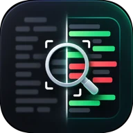

Focus Diff
A browser extension for GitHub pull requests. Filter the diff to the files you care about, see how much is left to review, and step through every conversation without hunting for it.

A browser extension for GitHub pull requests. Filter the diff to the files you care about, see how much is left to review, and step through every conversation without hunting for it.